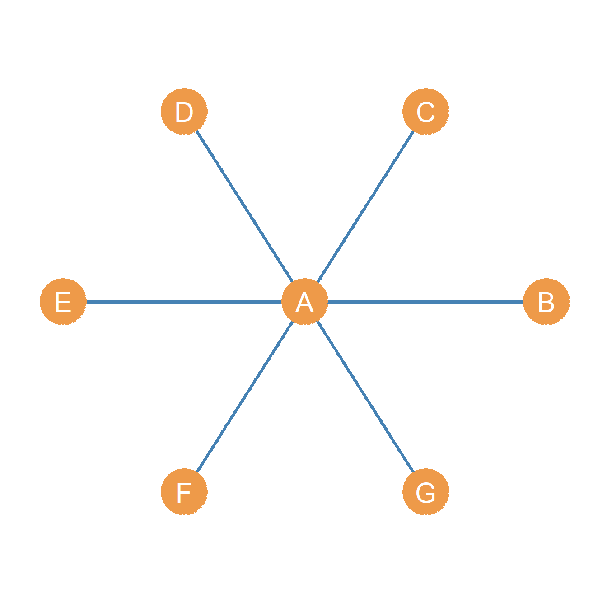

23 The “Big Three” Centrality Metrics
So what is centrality? As we have seen in sec-degcent, sec-distcent, and sec-pathcent, in terms of graph theory, a centrality metric is a summary index of a node’s position in a graph, based on (sometimes weighted) sums or averages of one of three things (Borgatti and Everett 2006):
- The number of edges that are directly incident upon that node.
- The length of (usually shortest) paths1 that have that node as one of their end nodes.
- The proportion of (usually shortest) paths2 that have that node as one their inner nodes.3
The basic idea behind all centrality metrics is based on the more/more principle. This is the idea that the higher any of the things above is for a node, then the more central that node is in the graph. So a node with more nodes incident upon it (the size of the neighbor set) should be more central. In the same way, a node who can reach many other nodes via the smallest shortest paths, should be more central. Finally, a node standing in the middle of the largest percentage of paths between other nodes should be more central, and so forth.
We can refer to all these things as network goods. The more/principle has a basic measurement implication, which is that centrality should never decrease when a node gains access to more network goods (e.g., one an additional connection) in the network. The more/more centrality principle was described by legendary social network theorist Linton Freeman in a classic paper (Freeman 1979).
We have also seen that, soiologically, the notion of centrality is tied to such concepts as “status,” “prestige,” “importance,” “influence,” “popularity,” “reachability,” “brokerage,” and many more. So the more central nodes have higher status, are more popular, influential, broker more deals, and so forth. However, these English language descriptors map onto distinct metrics. For instance, “popularity” clearly has to do with the number of connections a node has, what in sec-degcent we referred to as degree centralities. Brokerage, on the other hand, has more to do with a node stand in-between paths linking others nodes, what in sec-pathcent we referred to as betweenness centrality. Influence, on the other hand, seems to have more to do with the capacity to reach others, so it is more like closeness and so forth.
Accordingly, all these sociological concepts related to centrality have to be kept distinct from any one centrality metric (remember the three-step shuffle in social network analysis discussed earlier), because the same concept can be measured by more than one centrality metric, and the same metric can point to many distinct sociological concepts, depending on the context, the type of social ties the network is constructed from, and the way either “goods” (e.g., information, advice, support, etc.) or “bads” (e.g., disease, gossip, violence etc.) “flow” through the network (Borgatti 2005).
23.1 The “big three” centrality metrics
Linton Freeman (1979) defined the “big three” classic centrality metrics, roughly corresponding to the extent that a node accumulates one of the three network goods mentioned above. - So the degree centrality metric deal with nodes that have more edges directly incident upon them (Nieminen 1974). - The closeness centrality metric has to do with nodes that can reach more nodes via smallest shortest paths and thus accumulate as many of these paths in which they figure as the origin node as possible (Sabidussi 1966). - Finally, the betweenness centrality metric has to do with a node’s accumulation of the largest share of shortest paths in which they intermediate between two other nodes, and thus featuring them as one of the inner nodes in the paths between others (Freeman 1977).
Other centrality metrics can be seen as generalizations or special cases of any of these three basic notions (Borgatti 2005).
Importantly, Freeman showed that the big three centrality metrics reach their theoretical maximum for the central node in a star graph, such as the one shown in Figure fig-star).
A star graph is a graph containing a central or inner node (in Figure fig-star, node A), who is connected to all the other nodes in the graph, called the satellite or outer nodes (in Figure fig-star, nodes B through F). These nodes in contrast have only one connection and that is to the central node, none among themselves.
Because of these restrictions, it is easy to see that if \(G = (V, E)\) is a star graph of order \(n\), then we know that that graph size \(m = |E|\) (the size of the edge set), has to be \(n-1\). So in the example shown in Figure fig-star, \(n =7\) and \(m = n-1 = 7-1=6\). Neat!
23.2 The Big Three Centralities in the Star Graph
Degree, Closeness, and Betweenness centralities have an interesting property that provides a conceptual connection between them (Freeman 1979). Consider the star graph shown in Figure fig-star with central node A. The degree, closeness, and betweenness centralities of the different nodes are shown in Table tbl-startab).
Of course, by definition, we know beforehand that the central node in a star graph has to have the highest degree, since the degree of peripheral nodes is fixed to one and the degree of the central node is always \(n-1\), where \(n\) is the graph order.
However, note also that the central node has to have the highest closeness, since it is connected by a path of length one (an edge) to every peripheral node, but each peripheral node can only reach other peripheral nodes in the graph by a path of length two. They are farther away from other nodes than the central node.
Finally, note that the central node in the star will also always have the highest betweenness because each of the paths of length two connecting every pair of peripheral nodes to one another has to include the central node as an inner node in the path. So it serves as the intermediary between any communication between peripheral nodes.
| A | B | C | D | E | F | G | |
|---|---|---|---|---|---|---|---|
| Degree | 6.0 | 1.0 | 1.0 | 1.0 | 1.0 | 1.0 | 1.0 |
| Closeness | 8.2 | 4.5 | 4.5 | 4.5 | 4.5 | 4.5 | 4.5 |
| Betwenness | 15.0 | 0.0 | 0.0 | 0.0 | 0.0 | 0.0 | 0.0 |
Table 23.1: Centralities in a star graph of order 7.
The mathematical sociologist Linton Freeman (1979) thus thinks that the “big three” centrality measures are the big three precisely because they are maximized for the central node in a star graph.
References
Borgatti, Stephen P. 2005. “Centrality and Network Flow.” Social Networks 27 (1): 55–71.
Borgatti, Stephen P, and Martin G Everett. 2006. “A Graph-Theoretic Perspective on Centrality.” Social Networks 28 (4): 466–84.
Freeman, Linton C. 1977. “A Set of Measures of Centrality Based on Betweenness.” Sociometry 40 (1): 35–41.
———. 1979. “Centrality in Social Networks Conceptual Clarification.” Social Networks 1 (3): 215–39.
Nieminen, Juhani. 1974. “On the Centrality in a Graph.” Scandinavian Journal of Psychology 15 (1): 332–36.
Sabidussi, Gert. 1966. “The Centrality Index of a Graph.” Psychometrika 31 (4): 581–603.